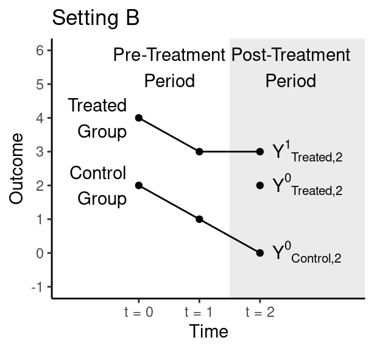
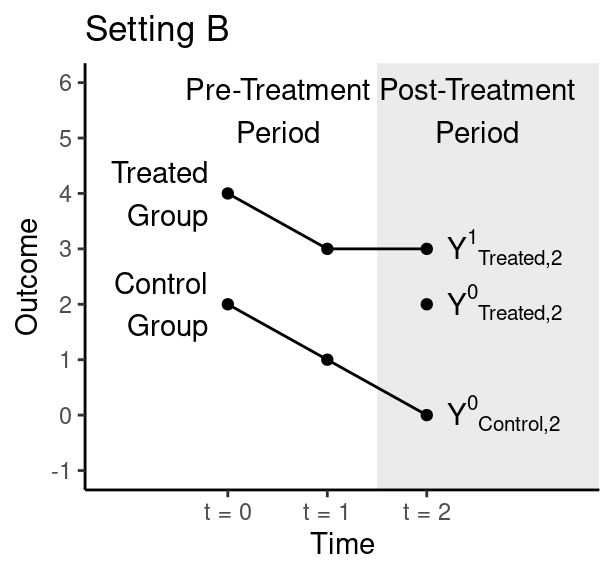

Problem Set 6. Difference in Differences + Synthetic Control
Relevant material will be covered by Nov 14. Problem set is due Nov 24 Nov 21. To complete the problem set, download the .Rmd and submit the knitted PDF.
The learning goals of completing this problem set are to engage with conceptual assumptions for difference in difference and synthetic control. There is no coding for you to do in this assignment.
You are allowed to use outside resources as you study and work on this problem set, but you must cite your sources and under no circumstances should you directly copy and paste work that is not your own, including from online resources, other students, or AI-generated text/code. Whenever possible, cite relevant content from lecture or discussion.
1. (25 points) Difference in Differences
In the figures below, the treated group becomes treated between time 1 and time 2. The control group never becomes treated. Figures are hypothetical scenarios that depict true potential outcomes even if those outcomes would not be observed in an actual study.
 

1.1 (5 points)
In which setting does the parallel trends assumption hold: A, B, neither, or both? Explain your answer.
Answer.
1.2 (2 points)
In actual data analysis, can we ever know for certain whether we are in Setting A or Setting B? Why or why not?
Answer.
1.3 (8 points)
Draw a plot where the parallel trends assumption holds, but extended parallel trends does not hold. Make sure the following are clearly labeled: control group, treatment group, pre-treatment period, post-treatment period, and counterfactual outcome for the treatment group. Insert an image of your drawing into RMarkdown, like for the previous pset.
Answer.
2. (25 points) Synthetic Control
This example is from Abadie, Diamond, and Hainmueller (2015) which estimates the effect of the 1990 German reunification on West Germany’s GDP per capita. Using synthetic control, they construct a synthetic version of West Germany. We show the selected weights and plot the gap between the observed and synthetic West Germany below.
## w.weights unit.names unit.numbers
## 1 0.135 USA 1
## 2 0.000 UK 2
## 3 0.507 Austria 3
## 4 0.000 Belgium 4
## 5 0.000 Denmark 5
## 6 0.000 France 6
## 8 0.000 Italy 8
## 9 0.000 Netherlands 9
## 10 0.000 Norway 10
## 12 0.166 Switzerland 12
## 14 0.146 Japan 14
## 16 0.000 Greece 16
## 18 0.000 Portugal 18
## 19 0.000 Spain 19
## 20 0.045 Australia 20
## 21 0.000 New Zealand 212.1 (10 points) Motivation
Instead of selecting the weights using synthetic control, we could have instead estimated the potential outcome for West Germany using a regression approach. Specifically, we consider the data prior to 1990 and simply regress the GDP per capita in West Germany onto the GDP per capita in other regions to find coefficients \(\hat \beta\) so that \[\widehat{Y^{0}}_{t, WestGermany} = \sum_j \hat \beta_{j} Y^{0}_{t, j}.\] We then use the estimated \(\hat \beta\) to predict \(\widehat{Y^{0}}_{t, WestGermany}\) after treatment occurs. The weights and gap plot are shown below. We haven’t included all the regions in the code below, but you don’t need to worry about that.
Looking at the estimated weights and the gap plots, why might you prefer the synthetic control estimate over the regression based estimate? Why might you prefer the regression estimate over the synthetic control estimate?
## weights name id
## 1 0.373 USA 1
## 2 0.343 Austria 3
## 3 0.126 Belgium 4
## 4 -0.026 Denmark 5
## 5 0.199 France 6
## 6 0.067 Netherlands 9
## 7 0.038 Switzerland 12
## 8 -0.142 Japan 14
Answer.
2.2 (7.5 points) Assessing fit
Using the same dataset, suppose we wanted to estimate the causal effect for some policy implemented in Portugal in 1990. Looking at the plots below, why might you be skeptical of the synthetic control here? If we decided to accept the synthetic control anyway, does there seem to be a causal effect?
Answer.
2.3 (7.5 points) Hypothesis testing
Suppose we used synthetic control for each of the other countries as a placebo test. Below, we show a hypothetical plot for the gap between the observed and synthetic values for each country. The difference between observed and synthetic West Germany is shown in the dark black line and the others are shown in gray. Note this is made up data. However, if this were the real plot you saw, would you be confident that there was a non-zero causal effect for West Germany? Explain why or why not.

Answer.